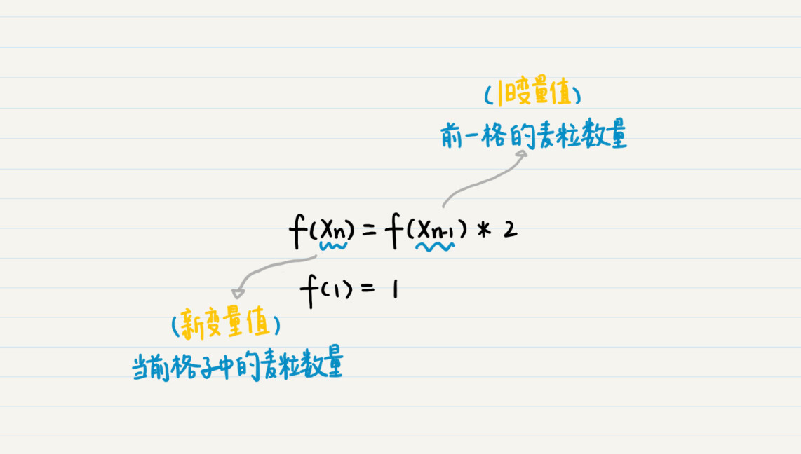
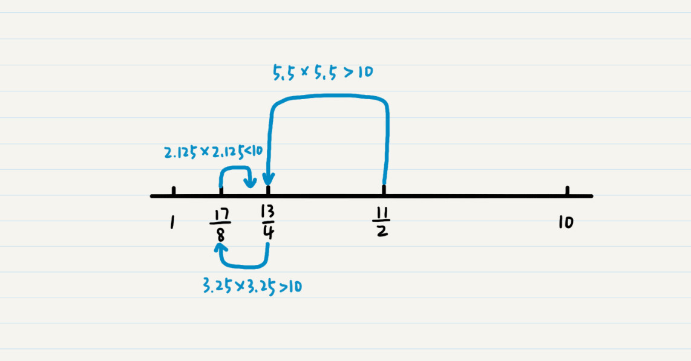
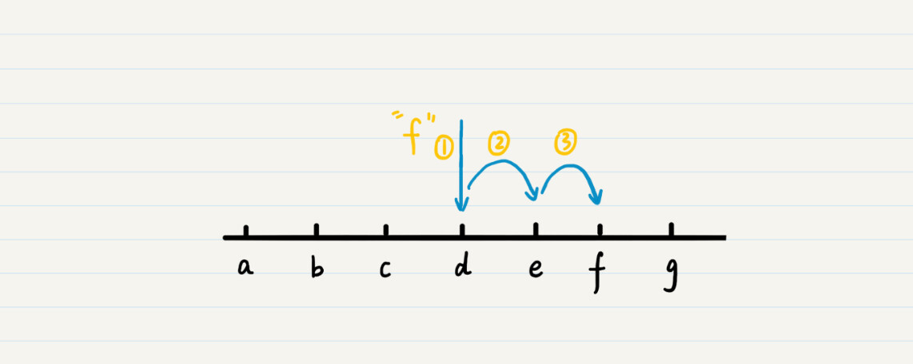

- 01 二进制：不了解计算机的源头，你学什么编程.md.html
- 02 余数：原来取余操作本身就是个哈希函数.md.html
- 03 迭代法：不用编程语言的自带函数，你会如何计算平方根？.md.html
- 04 数学归纳法：如何用数学归纳提升代码的运行效率？.md.html
- 05 递归（上）：泛化数学归纳，如何将复杂问题简单化？.md.html
- 06 递归（下）：分而治之，从归并排序到MapReduce.md.html
- 07 排列：如何让计算机学会“田忌赛马”？.md.html
- 08 组合：如何让计算机安排世界杯的赛程？.md.html
- 09 动态规划（上）：如何实现基于编辑距离的查询推荐？.md.html
- 10 动态规划（下）：如何求得状态转移方程并进行编程实现？.md.html
- 11 树的深度优先搜索（上）：如何才能高效率地查字典？.md.html
- 12 树的深度优先搜索（下）：如何才能高效率地查字典？.md.html
- 13 树的广度优先搜索（上）：人际关系的六度理论是真的吗？.md.html
- 14 树的广度优先搜索（下）：为什么双向广度优先搜索的效率更高？.md.html
- 15 从树到图：如何让计算机学会看地图？.md.html
- 16 时间和空间复杂度（上）：优化性能是否只是“纸上谈兵”？.md.html
- 17 时间和空间复杂度（下）：如何使用六个法则进行复杂度分析？.md.html
- 18 总结课：数据结构、编程语句和基础算法体现了哪些数学思想？.md.html
- 19 概率和统计：编程为什么需要概率和统计？.md.html
- 20 概率基础（上）：一篇文章帮你理解随机变量、概率分布和期望值.md.html
- 21 概率基础（下）：联合概率、条件概率和贝叶斯法则，这些概率公式究竟能做什么？.md.html
- 22 朴素贝叶斯：如何让计算机学会自动分类？.md.html
- 23 文本分类：如何区分特定类型的新闻？.md.html
- 24 语言模型：如何使用链式法则和马尔科夫假设简化概率模型？.md.html
- 25 马尔科夫模型：从PageRank到语音识别，背后是什么模型在支撑？.md.html
- 26 信息熵：如何通过几个问题，测出你对应的武侠人物？.md.html
- 27 决策树：信息增益、增益比率和基尼指数的运用.md.html
- 28 熵、信息增益和卡方：如何寻找关键特征？.md.html
- 29 归一化和标准化：各种特征如何综合才是最合理的？.md.html
- 30 统计意义（上）：如何通过显著性检验，判断你的A_B测试结果是不是巧合？.md.html
- 31 统计意义（下）：如何通过显著性检验，判断你的A_B测试结果是不是巧合？.md.html
- 32 概率统计篇答疑和总结：为什么会有欠拟合和过拟合？.md.html
- 33 线性代数：线性代数到底都讲了些什么？.md.html
- 34 向量空间模型：如何让计算机理解现实事物之间的关系？.md.html
- 35 文本检索：如何让计算机处理自然语言？.md.html
- 36 文本聚类：如何过滤冗余的新闻？.md.html
- 37 矩阵（上）：如何使用矩阵操作进行PageRank计算？.md.html
- 38 矩阵（下）：如何使用矩阵操作进行协同过滤推荐？.md.html
- 39 线性回归（上）：如何使用高斯消元求解线性方程组？.md.html
- 40 线性回归（中）：如何使用最小二乘法进行直线拟合？.md.html
- 41 线性回归（下）：如何使用最小二乘法进行效果验证？.md.html
- 42 PCA主成分分析（上）：如何利用协方差矩阵来降维？.md.html
- 43 PCA主成分分析（下）：为什么要计算协方差矩阵的特征值和特征向量？.md.html
- 44 奇异值分解：如何挖掘潜在的语义关系？.md.html
- 45 线性代数篇答疑和总结：矩阵乘法的几何意义是什么？.md.html
- 46 缓存系统：如何通过哈希表和队列实现高效访问？.md.html
- 47 搜索引擎（上）：如何通过倒排索引和向量空间模型，打造一个简单的搜索引擎？.md.html
- 48 搜索引擎（下）：如何通过查询的分类，让电商平台的搜索结果更相关？.md.html
- 49 推荐系统（上）：如何实现基于相似度的协同过滤？.md.html
- 50 推荐系统（下）：如何通过SVD分析用户和物品的矩阵？.md.html
- 51 综合应用篇答疑和总结：如何进行个性化用户画像的设计？.md.html
- 导读：程序员应该怎么学数学？.md.html
- 开篇词 作为程序员，为什么你应该学好数学？.md.html
- 数学专栏课外加餐（一） 我们为什么需要反码和补码？.md.html
- 数学专栏课外加餐（三）：程序员需要读哪些数学书？.md.html
- 数学专栏课外加餐（二） 位操作的三个应用实例.md.html
- 结束语 从数学到编程，本身就是一个很长的链条.md.html
- 捐赠
03 迭代法：不用编程语言的自带函数，你会如何计算平方根？
你好，我是黄申。
今天我们来说一个和编程结合得非常紧密的数学概念。在解释这个重要的概念之前，我们先来看个有趣的小故事。
古印度国王舍罕酷爱下棋，他打算重赏国际象棋的发明人宰相西萨·班·达依尔。这位聪明的大臣指着象棋盘对国王说：“陛下，我不要别的赏赐，请您在这张棋盘的第一个小格内放入一粒麦子，在第二个小格内放入两粒，第三小格内放入四粒，以此类推，每一小格内都比前一小格加一倍的麦子，直至放满64个格子，然后将棋盘上所有的麦粒都赏给您的仆人我吧！”
国王自以为小事一桩，痛快地答应了。可是，当开始放麦粒之后，国王发现，还没放到第二十格，一袋麦子已经空了。随着，一袋又一袋的麦子被放入棋盘的格子里，国王很快看出来，即便拿来全印度的粮食，也兑现不了对达依尔的诺言。
放满这64格到底需要多少粒麦子呢？这是个相当相当大的数字，想要手动算出结果并不容易。如果你觉得自己非常厉害，可以试着拿笔算算。其实，这整个算麦粒的过程，在数学上，是有对应方法的，这也正是我们今天要讲的概念：迭代法（Iterative Method）。
到底什么是迭代法？
迭代法，简单来说，其实就是不断地用旧的变量值，递推计算新的变量值。
我这么说可能还是有一点抽象，不容易理解。我们还回到刚才的故事。大臣要求每一格的麦子都是前一格的两倍，那么前一格里麦子的数量就是旧的变量值，我们可以先记作\(X\_{n-1}\)；而当前格子里麦子的数量就是新的变量值，我们记作\(X\_{n}\)。这两个变量的递推关系就是这样的：

如果你稍微有点编程经验，应该能发现，迭代法的思想，很容易通过计算机语言中的循环语言来实现。你知道，计算机本身就适合做重复性的工作，我们可以通过循环语句，让计算机重复执行迭代中的递推步骤，然后推导出变量的最终值。
那接下来，我们就用循环语句来算算，填满格子到底需要多少粒麦子。我简单用Java语言写了个程序，你可以看看。
public class Lesson3_1 {
/**
* @Description: 算算舍罕王给了多少粒麦子
* @param grid-放到第几格
* @return long-麦粒的总数
*/
public static long getNumberOfWheat(int grid) {
long sum = 0; // 麦粒总数
long numberOfWheatInGrid = 0; // 当前格子里麦粒的数量
numberOfWheatInGrid = 1; // 第一个格子里麦粒的数量
sum += numberOfWheatInGrid;
for (int i = 2; i <= grid; i ++) {
numberOfWheatInGrid *= 2; // 当前格子里麦粒的数量是前一格的2倍
sum += numberOfWheatInGrid; // 累计麦粒总数
}
return sum;
}
}
下面是一段测试代码，它计算了到第63格时，总共需要多少麦粒。
public static void main(String[] args) {
System.out.println(String.format("舍罕王给了这么多粒：%d", Lesson3_1.getNumberOfWheat(63)));
}
计算的结果是9223372036854775807，多到数不清了。我大致估算了一下，一袋50斤的麦子估计有130万粒麦子，那么9223372036854775807相当于70949亿袋50斤的麦子！
这段代码有两个地方需要注意。首先，用于计算每格麦粒数的变量以及总麦粒数的变量都是Java中的long型，这是因为计算的结果实在是太大了，超出了Java int型的范围；第二，我们只计算到了第63格，这是因为计算到第64格之后，总数已经超过Java中long型的范围。
迭代法有什么具体应用？
看到这里，你可能大概已经理解迭代法的核心理念了。迭代法无论是在数学，还是计算机领域都有很广泛的应用。大体上，迭代法可以运用在以下几个方面：
求数值的精确或者近似解。典型的方法包括二分法（Bisection method）和牛顿迭代法（Newton’s method）。
在一定范围内查找目标值。典型的方法包括二分查找。
机器学习算法中的迭代。相关的算法或者模型有很多，比如K-均值算法（K-means clustering）、PageRank的马尔科夫链（Markov chain）、梯度下降法（Gradient descent）等等。迭代法之所以在机器学习中有广泛的应用，是因为很多时候机器学习的过程，就是根据已知的数据和一定的假设，求一个局部最优解。而迭代法可以帮助学习算法逐步搜索，直至发现这种解。
这里，我详细讲解一下求数值的解和查找匹配记录这两个应用。
1.求方程的精确或者近似解
迭代法在数学和编程的应用有很多，如果只能用来计算庞大的数字，那就太“暴殄天物”了。迭代还可以帮助我们进行无穷次地逼近，求得方程的精确或者近似解。
比如说，我们想计算某个给定正整数n（n>1）的平方根，如果不使用编程语言自带的函数，你会如何来实现呢？
假设有正整数n，这个平方根一定小于n本身，并且大于1。那么这个问题就转换成，在1到n之间，找一个数字等于n的平方根。
我这里采用迭代中常见的二分法。每次查看区间内的中间值，检验它是否符合标准。
举个例子，假如我们要找到10的平方根。我们需要先看1到10的中间数值，也就是11/2=5.5。5.5的平方是大于10的，所以我们要一个更小的数值，就看5.5和1之间的3.25。由于3.25的平方也是大于10的，继续查看3.25和1之间的数值，也就是2.125。这时，2.125的平方小于10了，所以看2.125和3.25之间的值，一直继续下去，直到发现某个数的平方正好是10。
我把具体的步骤画成了一张图，你可以看看。

我这里用Java代码演示一下效果，你可以结合上面的讲解，来理解迭代的过程。
public class Lesson3_2 {
/**
* @Description: 计算大于1的正整数之平方根
* @param n-待求的数, deltaThreshold-误差的阈值, maxTry-二分查找的最大次数
* @return double-平方根的解
*/
public static double getSqureRoot(int n, double deltaThreshold, int maxTry) {
if (n <= 1) {
return -1.0;
}
double min = 1.0, max = (double)n;
for (int i = 0; i < maxTry; i++) {
double middle = (min + max) / 2;
double square = middle * middle;
double delta = Math.abs((square / n) - 1);
if (delta <= deltaThreshold) {
return middle;
} else {
if (square > n) {
max = middle;
} else {
min = middle;
}
}
}
return -2.0;
}
}
这是一段测试代码，我们用它来找正整数10的平方根。如果找不到精确解，我们就返回一个近似解。
public static void main(String[] args) {
int number = 10;
double squareRoot = Lesson3_2.getSqureRoot(number, 0.000001, 10000);
if (squareRoot == -1.0) {
System.out.println("请输入大于1的整数");
} else if (squareRoot == -2.0) {
System.out.println("未能找到解");
} else {
System.out.println(String.format("%d的平方根是%f", number, squareRoot));
}
}
这段代码的实现思想就是我前面讲的迭代过程，这里面有两个小细节我解释下。
第一，我使用了deltaThreshold来控制解的精度。虽然理论上来说，可以通过二分的无限次迭代求得精确解，但是考虑到实际应用中耗费的大量时间和计算资源，绝大部分情况下，我们并不需要完全精确的数据。
第二，我使用了maxTry来控制循环的次数。之所以没有使用while(true)循环，是为了避免死循环。虽然，在这里使用deltaThreshold，理论上是不会陷入死循环的，但是出于良好的编程习惯，我们还是尽量避免产生的可能性。
说完了二分迭代法，我这里再简单提一下牛顿迭代法。这是牛顿在17世纪提出的一种方法，用于求方程的近似解。这种方法以微分为基础，每次迭代的时候，它都会去找到比上一个值\(x\_{0}\)更接近的方程的根，最终找到近似解。该方法及其延伸也被应用在机器学习的算法中，在之后机器学习中的应用中，我会具体介绍这个算法。
2.查找匹配记录
二分法中的迭代式逼近，不仅可以帮我们求得近似解，还可以帮助我们查找匹配的记录。我这里用一个查字典的案例来说明。
在自然语言处理中，我们经常要处理同义词或者近义词的扩展。这时，你手头上会有一个同义词/近义词的词典。对于一个待查找的单词，我们需要在字典中先找出这个单词，以及它所对应的同义词和近义词，然后进行扩展。比如说，这个字典里有一个关于“西红柿”的词条，其同义词包括了“番茄”和“tomato”。
那么，在处理文章的时候，当我们看到了“西红柿”这个词，就去字典里查一把，拿出“番茄”“tomato”等等，并添加到文章中作为同义词/近义词的扩展。这样的话，用户在搜索“西红柿”这个词的时候，我们就能确保出现“番茄”或者“tomato”的文章会被返回给用户。
乍一看到这个任务的时候，你也许想到了哈希表。没错，哈希表是个好方法。不过，如果不使用哈希表，你还有什么其他方法呢？这里，我来介绍一下，用二分查找法进行字典查询的思路。
第一步，将整个字典先进行排序（假设从小到大）。二分法中很关键的前提条件是，所查找的区间是有序的。这样才能在每次折半的时候，确定被查找的对象属于左半边还是右半边。
第二步，使用二分法逐步定位到被查找的单词。每次迭代的时候，都找到被搜索区间的中间点，看看这个点上的单词，是否和待查单词一致。如果一致就返回；如果不一致，要看被查单词比中间点上的单词是小还是大。如果小，那说明被查的单词如果存在字典中，那一定在左半边；否则就在右半边。
第三步，根据第二步的判断，选择左半边或者后半边，继续迭代式地查找，直到范围缩小到单个的词。如果到最终仍然无法找到，则返回不存在。
当然，你也可以对单词进行从大到小的排序，如果是那样，在第二步的判断就需要相应地修改一下。
我把在a到g的7个字符中查找f的过程，画成了一张图，你可以看看。

这个方法的整体思路和二分法求解平方根是一致的，主要区别有两个方面：第一，每次判断是否终结迭代的条件不同。求平方根的时候，我们需要判断某个数的平方是否和输入的数据一致。而这里，我们需要判断字典中某个单词是否和待查的单词相同。第二，二分查找需要确保被搜索的空间是有序的。
我把具体的代码写出来了，你可以看一下。
import java.util.Arrays;
public class Lesson3_3 {
/**
* @Description: 查找某个单词是否在字典里出现
* @param dictionary-排序后的字典, wordToFind-待查的单词
* @return boolean-是否发现待查的单词
*/
public static boolean search(String[] dictionary, String wordToFind) {
if (dictionary == null) {
return false;
}
if (dictionary.length == 0) {
return false;
}
int left = 0, right = dictionary.length - 1;
while (left <= right) {
int middle = (left + right) / 2;
if (dictionary[middle].equals(wordToFind)) {
return true;
} else {
if (dictionary[middle].compareTo(wordToFind) > 0) {
right = middle - 1;
} else {
left = middle + 1;
}
}
}
return false;
}
}
我测试代码首先建立了一个非常简单的字典，然后使用二分查找法在这个字典中查找单词“i”。
public static void main(String[] args) {
String[] dictionary = {"i", "am", "one", "of", "the", "authors", "in", "geekbang"};
Arrays.sort(dictionary);
String wordToFind = "i";
boolean found = Lesson3_3.search(dictionary, wordToFind);
if (found) {
System.out.println(String.format("找到了单词%s", wordToFind));
} else {
System.out.println(String.format("未能找到单词%s", wordToFind));
}
}
说的这两个例子，都属于迭代法中的二分法，我在第一节的时候说过，二分法其实也体现了二进制的思想。
小结
到这里，我想你对迭代的核心思路有了比较深入的理解。
实际上，人类并不擅长重复性的劳动，而计算机却很适合做这种事。这也是为什么，以重复为特点的迭代法在编程中有着广泛的应用。不过，日常的实际项目可能并没有体现出明显的重复性，以至于让我们很容易就忽视了迭代法的使用。所以，你要多观察问题的现象，思考其本质，看看不断更新变量值或者缩小搜索的区间范围，是否可以获得最终的解（或近似解、局部最优解），如果是，那么你就可以尝试迭代法。
思考题
在你曾经做过的项目中，是否使用过迭代法？如果有，你觉得迭代法最大的特点是什么？如果还没用过，你想想看现在的项目中是否有可以使用的地方？
欢迎在留言区交作业，并写下你今天的学习笔记。你可以点击“请朋友读”，把今天的内容分享给你的好友，和他一起精进。
© 2019 - 2023 Liangliang Lee. Powered by gin and hexo-theme-book.